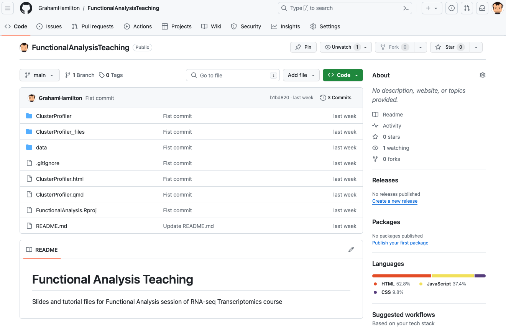
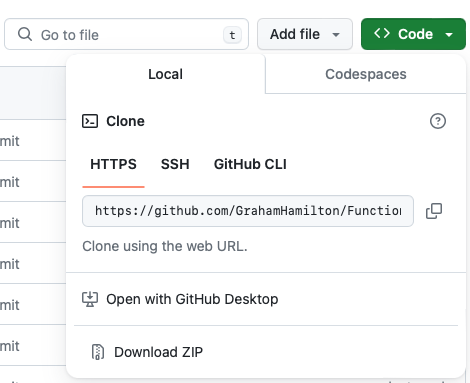

Qiagen Ingenuity Pathway Analysis
ClusterProfiler is an R package that performs functional enrichment analysis, to aide interpretation of high throughput data like RNASeq.
Install CRAN packages
Install Biocondustor packages
bioconductor.packages <- c("org.Hs.eg.db",
"biomaRt",
"clusterProfiler",
"enrichplot",
"pathview")
bioconductor.load <- function(pkg){
new.pkg <- pkg[!(pkg %in% installed.packages()[, "Package"])]
if (length(new.pkg)){
if (!requireNamespace("BiocManager", quietly = TRUE))
install.packages("BiocManager")
BiocManager::install(new.pkg)
}
sapply(pkg, require, character.only = TRUE)
}
bioconductor.load(bioconductor.packages)Create the cut off used for filtering results
Read in the results file from DESeq2 Analysis
| ensembl_gene_id | baseMean | log2FoldChange | lfcSE | stat | pvalue | padj |
|---|---|---|---|---|---|---|
| ENSG00000157191 | 8171.718 | -2.429669 | 0.0374863 | -64.81491 | 0 | 0 |
| ENSG00000117090 | 2322.100 | -5.224265 | 0.0775600 | -67.35771 | 0 | 0 |
| ENSG00000026751 | 4495.926 | -4.690935 | 0.0870932 | -53.86110 | 0 | 0 |
baseMean - mean of normalized counts for all samples
log2FoldChange - log2 fold change (MAP): condition treated vs untreated
lfcSE - standard error: condition treated vs untreated
stat - Wald statistic: condition treated vs untreated
pvalue - Wald test p-value: condition treated vs untreated
padj - BH adjusted p-values
The DESeq2 results file contains very little information about the genes.
Annotations can be added from the GFF3 file or form the Biomart data base.
Using the R package biomaRt we can access the data sets
| dataset | description | version |
|---|---|---|
| abrachyrhynchus_gene_ensembl | Pink-footed goose genes (ASM259213v1) | ASM259213v1 |
| acalliptera_gene_ensembl | Eastern happy genes (fAstCal1.2) | fAstCal1.2 |
| acarolinensis_gene_ensembl | Green anole genes (AnoCar2.0v2) | AnoCar2.0v2 |
| acchrysaetos_gene_ensembl | Golden eagle genes (bAquChr1.2) | bAquChr1.2 |
| acitrinellus_gene_ensembl | Midas cichlid genes (Midas_v5) | Midas_v5 |
There are 214 organism datasets in Biomart.
Here we get annotations from the Ensembl human database at Biomart
database <- "hsapiens_gene_ensembl"
mart <- "genes"
filt <- "ensembl_gene_id"
ensembl <- useEnsembl(biomart = mart, dataset = database)
att <- c("ensembl_gene_id","external_gene_name","chromosome_name","start_position","end_position","gene_biotype","entrezgene_id")
annotations <- getBM(attributes=att,filter=filt,values=de_results$ensembl_gene_id,mart=ensembl) %>%
distinct(ensembl_gene_id, .keep_all = TRUE)| ensembl_gene_id | external_gene_name | chromosome_name | start_position | end_position | gene_biotype | entrezgene_id |
|---|---|---|---|---|---|---|
| ENSG00000000460 | FIRRM | 1 | 169662007 | 169854080 | protein_coding | 55732 |
| ENSG00000000938 | FGR | 1 | 27612064 | 27635185 | protein_coding | 2268 |
| ENSG00000001084 | GCLC | 6 | 53497341 | 53616970 | protein_coding | 2729 |
The annotations can be merged with our results file
| ensembl_gene_id | baseMean | log2FoldChange | lfcSE | stat | pvalue | padj | external_gene_name | chromosome_name | start_position | end_position | gene_biotype | entrezgene_id |
|---|---|---|---|---|---|---|---|---|---|---|---|---|
| ENSG00000157191 | 8171.718 | -2.429669 | 0.0374863 | -64.81491 | 0 | 0 | NECAP2 | 1 | 16440721 | 16460078 | protein_coding | 55707 |
| ENSG00000117090 | 2322.100 | -5.224265 | 0.0775600 | -67.35771 | 0 | 0 | SLAMF1 | 1 | 160608106 | 160647044 | protein_coding | 6504 |
| ENSG00000026751 | 4495.926 | -4.690935 | 0.0870932 | -53.86110 | 0 | 0 | SLAMF7 | 1 | 160739057 | 160754821 | protein_coding | 57823 |
Create a results directory for the ClusterProfiler results files
Filter the results table for genes that have a p adjusted value of 0.1 and a log 2 fold change of 1.
NOTE: The use of the absolute value for the log2 fold change.
| ensembl_gene_id | baseMean | log2FoldChange | lfcSE | stat | pvalue | padj | external_gene_name | chromosome_name | start_position | end_position | gene_biotype | entrezgene_id |
|---|---|---|---|---|---|---|---|---|---|---|---|---|
| ENSG00000157191 | 8171.718 | -2.429669 | 0.0374863 | -64.81491 | 0 | 0 | NECAP2 | 1 | 16440721 | 16460078 | protein_coding | 55707 |
| ENSG00000117090 | 2322.100 | -5.224265 | 0.0775600 | -67.35771 | 0 | 0 | SLAMF1 | 1 | 160608106 | 160647044 | protein_coding | 6504 |
| ENSG00000026751 | 4495.926 | -4.690935 | 0.0870932 | -53.86110 | 0 | 0 | SLAMF7 | 1 | 160739057 | 160754821 | protein_coding | 57823 |
There are 4954 genes remaining after filtering.
Example - 57 genes were differentially expressed out of a total of 17,980. Among the differentially expressed genes, 28 are annotated to a gene set
| genes_not_differentially_expressed | genes_differentially_expressed | |
|---|---|---|
| In_GO_term | 2613 | 28 |
| Not_in_GO_term | 15310 | 29 |
Test significance using hypergeometric distribution, one-sided Fisher’s exact test. The un-corrected P value 7.879194e-10
Over representation analysis
List of entrez ids for the differentially expressed genes, using the pull() command from dplyr
[1] 55707 6504 57823 2213 7431 5552Over representation analysis
| ID | Description | GeneRatio | BgRatio | pvalue | p.adjust | qvalue | geneID | Count | |
|---|---|---|---|---|---|---|---|---|---|
| GO:0005925 | GO:0005925 | focal adhesion | 169/4681 | 422/19869 | 0 | 0 | 0 | VIM/SRC/PTK2B/ACTG1/CD44/ICAM1/MARCKS/ACTN1/PLAU/RDX/LCP1/LMO7/PTK2/ARHGAP31/FERMT2/YWHAE/MRC2/SDC4/ARPC2/MAP2K1/FLNB/CTTN/ITGB7/CAT/LRP1/FZD2/CD9/PABPC1/YES1/PPFIBP1/PFN1/IGF2R/ITGB1/GNB2/ITGA3/HMGA1/DDR2/NCKAP1/TNC/CAV1/RPL12/DPP4/PARVG/ZYX/ADGRE5/PAK1/SLC4A2/CYFIP1/FLNC/AKAP12/RAB21/CYBA/GJA1/PARVA/ARL14EP/PDLIM1/RRAS/ATP6V0A2/RHOG/ALCAM/CNN3/GSN/ACTN4/LIMA1/PARVB/PHLDB2/MMP14/SVIL/SLC9A1/RPS19/ACTN3/AMBRA1/FAT1/KIF23/JUP/RND3/CSRP2/ENG/HCK/HYOU1/PCBP2/ABCB4/HACD3/EPB41L2/PTPRC/HSPG2/TNS1/MAP4K4/MAP2K2/CD151/TSPAN4/PRAG1/AIF1L/ARHGEF7/CLASP1/SORBS1/ITGB2/ANXA6/RPLP0/RHOU/RPLP1/DAB2/ITGA5/TLN2/FHL3/ADGRB1/KRAS/ITGA6/NEXN/FZD1/ALOX15B/ITGA1/SH3KBP1/ACTB/LMLN/FGFR3/ITGB8/MYH9/SLC6A4/EPHA2/TGM2/TPM4/STARD8/SPRY4/ARHGAP22/CAV3/EHD3/CASS4/TRIP6/TLE2/FHL1/DST/SNTB2/PTK7/CDH13/ITGB5/WASF1/L1CAM/PLAUR/PVR/NECTIN2/ADAM9/FBLN7/LAYN/CD59/TNS3/NHS/EPB41L5/RPL5/SNTB1/CDC42EP1/DLC1/CPNE3/RHOA/ANXA1/AFAP1/DIXDC1/SCARF2/CORO2B/MCAM/OPRM1/ACTN2/ITGA2B/FHL2/SNAP23/ITGA4/ITGB4/CAV2/NFASC | 169 |
| GO:0030055 | GO:0030055 | cell-substrate junction | 172/4681 | 432/19869 | 0 | 0 | 0 | VIM/SRC/PTK2B/ACTG1/CD44/ICAM1/MARCKS/ACTN1/PLAU/RDX/LCP1/LMO7/PTK2/ARHGAP31/FERMT2/YWHAE/MRC2/SDC4/ARPC2/MAP2K1/FLNB/CTTN/ITGB7/CAT/LRP1/FZD2/CD9/PABPC1/YES1/PPFIBP1/PFN1/IGF2R/ITGB1/GNB2/ITGA3/HMGA1/DDR2/NCKAP1/TNC/CAV1/RPL12/DPP4/PARVG/ZYX/ADGRE5/PAK1/SLC4A2/CYFIP1/FLNC/AKAP12/RAB21/CYBA/GJA1/PARVA/ARL14EP/PDLIM1/RRAS/ATP6V0A2/RHOG/ALCAM/CNN3/GSN/ACTN4/LIMA1/PARVB/PHLDB2/MMP14/SVIL/SLC9A1/RPS19/ACTN3/AMBRA1/FAT1/KIF23/JUP/RND3/CSRP2/ENG/HCK/HYOU1/PCBP2/ABCB4/HACD3/EPB41L2/PTPRC/HSPG2/TNS1/MAP4K4/MAP2K2/CD151/TSPAN4/PRAG1/AIF1L/ARHGEF7/CLASP1/SORBS1/ITGB2/ANXA6/RPLP0/RHOU/RPLP1/DAB2/ITGA5/TLN2/FHL3/ADGRB1/KRAS/ITGA6/NEXN/FZD1/ALOX15B/ITGA1/SH3KBP1/ACTB/LMLN/FGFR3/ITGB8/MYH9/SLC6A4/EPHA2/TGM2/TPM4/STARD8/SPRY4/ARHGAP22/CAV3/EHD3/CASS4/TRIP6/TLE2/FHL1/DST/SNTB2/PTK7/CDH13/ITGB5/WASF1/L1CAM/PLAUR/PVR/NECTIN2/NRAP/EPPK1/ADAM9/FBLN7/LAYN/CD59/TNS3/NHS/EPB41L5/RPL5/SNTB1/CDC42EP1/DLC1/CPNE3/RHOA/ANXA1/AFAP1/DIXDC1/SCARF2/CORO2B/MCAM/SMPX/OPRM1/ACTN2/ITGA2B/FHL2/SNAP23/ITGA4/ITGB4/CAV2/NFASC | 172 |
| GO:0045121 | GO:0045121 | membrane raft | 135/4681 | 326/19869 | 0 | 0 | 0 | SRC/PTK2B/RFTN1/CD24/FAS/ICAM1/CAVIN1/LAT2/PECAM1/LCK/PGK1/PRKAR2B/CFLAR/MYOF/VDAC1/HMOX1/MYO1C/SDC4/KCNA3/PLLP/GPC1/TUBB/BST2/ITGAM/PPT1/TGFBR2/LRRK2/CLN6/BIRC2/ITGB1/RIPK1/SMO/TRADD/ENO2/CAV1/EFNA5/DPP4/CD55/GJA1/ARID3A/CRK/LRP4/TNF/LRP6/RTN4RL1/CARD11/EHD2/SPRED1/SERPINH1/ATP1B1/SLC9A1/FAIM2/SMPD2/ANGPT1/SCARB1/EPHB1/ADTRP/AKAP6/HCK/S100A10/ABCB4/STOML1/RET/ATP2B4/PTPRC/CD79A/TRAF2/CXADR/IRS1/SORBS1/ATP1A4/ITGB2/ADRA1B/EFNB1/SLC1A2/ITGA1/LRP8/SLC6A4/RGMB/MAL/CHRNA7/OLR1/SYNJ2/MYADM/CD8A/CAV3/FYN/PLPP3/CD19/FXYD1/INSR/CDH13/GABBR1/ATP1A2/LAT/S1PR1/MAPT/CR1/UNC5A/PTGS2/TFPI/KCNQ1/OPRD1/CHRNB2/CAVIN3/NOS1AP/F2R/ADCY1/STOM/MLC1/TNR/DLC1/TRPM8/ATP2B2/KCND2/ARC/EMP2/NFAM1/CD226/LY6K/OPRM1/PAG1/ADGRG1/CDH1/SELPLG/ABCG2/NTSR1/ADD2/TEX101/CD36/PTGIS/PSEN2/KCNE1/CAV2/FASLG | 135 |
Gene set enrichment analysis
Input is a named vector of log fold changes with entrez ids as the names, sorted
84824 219970 344658 6439 5596 2327
7.372843 6.883795 6.746818 6.634223 6.440792 6.368684 Gene set enrichment analysis
| ID | Description | setSize | enrichmentScore | NES | pvalue | p.adjust | qvalue | rank | leading_edge | core_enrichment | ||
|---|---|---|---|---|---|---|---|---|---|---|---|---|
| GO:0031012 | GO:0031012 | extracellular matrix | 193 | -0.5123197 | <<<<<<< HEAD-1.831391 | =======-1.835144 | >>>>>>> 45e2f12458a54f4ddddec8c33e6855043d3130640 | 0 | 0 | 1148 | tags=49%, list=23%, signal=39% | 5199/9423/121227/4185/81794/23671/89797/85301/9508/7474/2/7098/2201/2199/146760/2811/176/1463/27299/63827/30008/83729/2335/26033/375790/50509/2239/59/84034/3918/4015/8482/284/1280/9719/8785/3697/2161/6383/5155/129080/3383/1307/5654/64499/5269/80760/4313/7177/129804/1311/54361/84171/3912/162466/2152/9313/4052/84894/64856/1191/51162/333/2263/1462/7052/2615/8076/1291/5265/51129/4321/4693/151887/3898/2267/1292/3914/1303/6678/145864/4312/54507/1289/1946/4319/1294/3371/5054/4016/64129/4316/3491/43/1277 |
| GO:0030312 | GO:0030312 | external encapsulating structure | 194 | -0.5106174 | <<<<<<< HEAD-1.825759 | =======-1.829293 | >>>>>>> 45e2f12458a54f4ddddec8c33e6855043d3130640 | 0 | 0 | 1148 | tags=49%, list=23%, signal=39% | 5199/9423/121227/4185/81794/23671/89797/85301/9508/7474/2/7098/2201/2199/146760/2811/176/1463/27299/63827/30008/83729/2335/26033/375790/50509/2239/59/84034/3918/4015/8482/284/1280/9719/8785/3697/2161/6383/5155/129080/3383/1307/5654/64499/5269/80760/4313/7177/129804/1311/54361/84171/3912/162466/2152/9313/4052/84894/64856/1191/51162/333/2263/1462/7052/2615/8076/1291/5265/51129/4321/4693/151887/3898/2267/1292/3914/1303/6678/145864/4312/54507/1289/1946/4319/1294/3371/5054/4016/64129/4316/3491/43/1277 |
| GO:0000785 | GO:0000785 | chromatin | 369 | -0.4663016 | <<<<<<< HEAD-1.699596 | =======-1.706454 | >>>>>>> 45e2f12458a54f4ddddec8c33e6855043d3130640 | 0 | 0 | 757 | tags=33%, list=15%, signal=31% | 6659/6899/168620/367/56956/8193/5396/4778/5347/6097/25946/7005/3005/1746/3227/57801/4487/3199/688/6934/7029/3232/64919/3171/9355/283248/23462/5468/84913/26298/2623/2355/9096/6591/157848/93986/3195/4734/4783/55509/6096/3167/2103/4784/3238/64843/4086/221833/11240/8091/8335/2649/644168/83881/4776/4582/79191/4092/4610/3131/6474/5307/8013/3398/7052/5076/51513/3299/26038/6939/4781/338917/3206/10660/7003/2300/1482/3204/5308/55806/51804/9496/26468/860/90993/2018/253738/4211/23532/9242/1879/6604/5080/2303/4212/2016/10891/92815/1747/3237/2516/10265/4091/79776/3229/84667/1745/10481/5087/56938/2019/3236/10736/6913/2115/3235/6495/3234/5077/6662/3280/3226/2290 |
Saving the results to a file
ORA GO analysis
GSEA GO analysis
Various options for visualising the results
Pathway analysis uses over representation and gene set enrichment analysis.
Can use several databases for pathway analysis:
Continuously updated pathway database curated by a community of researchers.
Supported organisms:
[1] "Anopheles gambiae" "Arabidopsis thaliana"
[3] "Bos taurus" "Caenorhabditis elegans"
[5] "Canis familiaris" "Danio rerio"
[7] "Drosophila melanogaster" "Equus caballus"
[9] "Gallus gallus" "Homo sapiens"
[11] "Mus musculus" "Pan troglodytes"
[13] "Populus trichocarpa" "Rattus norvegicus"
[15] "Saccharomyces cerevisiae" "Solanum lycopersicum"
[17] "Sus scrofa" "Zea mays" Reactome is an open-source, open access, manually curated and peer-reviewed pathway database. Only implements over representation analysis.
Supported organisms:
[1] "celegans" "fly" "human" "mouse" "rat" "yeast"
[7] "zebrafish"Kyoto Encyclopedia of Genes and Genomes.
Implements ORA and GSEA
Supports a large number of organisms 8137.
Search using search_kegg_organism() command:
Over representation analysis
| ID | Description | GeneRatio | BgRatio | pvalue | p.adjust | qvalue | geneID | Count | |
|---|---|---|---|---|---|---|---|---|---|
| hsa04514 | hsa04514 | Cell adhesion molecules | 82/2265 | 158/8662 | 0 | 0e+00 | 0e+00 | 959/3383/102723996/5175/1493/3134/958/90952/6385/941/3695/3684/942/4756/5792/5818/3688/3384/50848/9379/26047/57555/923/23705/6382/214/965/29126/80380/3109/3683/5788/84628/22871/9069/3689/5802/1462/3655/57689/6383/5133/8506/3696/3135/3133/9369/22829/4897/925/3105/7412/3680/3107/94030/57502/1002/3123/3897/5817/137075/5819/926/3127/3106/22854/6614/23562/29851/57863/947/10666/4359/3108/100506658/999/6404/1366/3676/927/5797/23114 | 82 |
| hsa05414 | hsa05414 | Dilated cardiomyopathy | 57/2265 | 103/8662 | 0 | 0e+00 | 0e+00 | 71/7168/55799/3695/7040/112/3679/3688/3675/4000/776/783/784/1674/7124/5567/7139/7169/2778/3678/3655/3672/3908/6262/60/3696/1837/59284/7171/782/859/3680/93589/111/6645/4633/3693/109/153/8082/4624/59283/6546/6443/6547/27092/6641/107/7042/781/4634/102723407/115/3674/4625/3676/3691 | 57 |
| hsa04640 | hsa04640 | Hematopoietic cell lineage | 54/2265 | 99/8662 | 0 | 1e-07 | 1e-07 | 960/100133941/2208/3684/928/3675/1604/1437/4254/7124/3109/2322/3559/912/3569/921/1435/3678/3655/3553/3672/3563/3552/1438/925/2811/3581/930/913/290/910/3123/1378/916/1441/952/966/3575/926/3815/917/3127/924/3554/2814/915/7850/947/3108/102723407/3674/3676/948/927 | 54 |
Gene set enrichment analysis.
| ID | Description | setSize | enrichmentScore | NES | pvalue | p.adjust | qvalue | rank | leading_edge | core_enrichment | |||||||||||||
|---|---|---|---|---|---|---|---|---|---|---|---|---|---|---|---|---|---|---|---|---|---|---|---|
| hsa04060 | hsa04060 | Cytokine-cytokine receptor interaction | 108 | -0.5141327 | <<<<<<< HEAD-1.770489 | 0.0000004 | 0.0001114 | 0.0000983 | =======-1.780067 | 0.0000009 | 0.0002452 | 0.0002136 | >>>>>>> 45e2f12458a54f4ddddec8c33e6855043d3130641052 | tags=45%, list=21%, signal=37% | 6352/3554/29949/3604/83729/1441/130399/3586/56300/8794/1233/6368/8784/8600/4804/6357/355/4049/27302/94/7850/3596/3597/8200/1271/3576/1438/6362/7293/6364/64109/7292/6363/959/3569/8792/3976/3553/10148/6346/3557/3552/6369/1437/3624/3593/6376/6367/6361 | ||||||||
| hsa05202 | hsa05202 | Transcriptional misregulation in cancer | 83 | -0.5285037 | <<<<<<< HEAD-1.788092 | 0.0000040 | 0.0005627 | 0.0004964 | =======-1.796665 | 0.0000031 | 0.0004244 | 0.0003696 | >>>>>>> 45e2f12458a54f4ddddec8c33e6855043d313064917 | tags=45%, list=19%, signal=37% | 10912/3002/942/598/7185/1848/64919/5154/4804/5468/85414/4914/7850/3195/4086/3728/102723407/8091/7704/5327/3576/5328/8013/3398/51513/3206/51804/5747/860/4211/3569/3207/5087/1437/2115/6495/5077 | ||||||||
| hsa03008 | hsa03008 | Ribosome biogenesis in eukaryotes | 15 | 0.5648480 | 2.487108 | 0.0002677 | 0.0168936 | 0.0149043 | 1479 | tags=87%, list=30%, signal=61% | 10799/54913/54433/51077/27341/55341/1736/10885/55916/83732/138716/10528/65083 | =======hsa03420 | hsa03420 | Nucleotide excision repair | 11 | 0.6570840 | 2.587166 | 0.0003726 | 0.0231333 | 0.0201464 | 1299 | tags=91%, list=26%, signal=67% | 100533467/56655/7507/5441/3978/5111/7508/2074/54107/5983 | >>>>>>> 45e2f12458a54f4ddddec8c33e6855043d313064
Save the pathway analysis to file
Over representation analysis
Gene set enrichment analysis
Pathview is a tool set for pathway based data integration and visualization
Create a function to retrieve the KEG pathways
kegg_pathview <- function(kegg_pathway_id){
pathview(gene.data = kegg_gsea, # List of DE gene entrez ids and log fold changes
pathway.id = kegg_pathway_id, # KEGG pathway id to download and annotate
species = "hsa", # Organism KEGG id
gene.idtype = "KEGG",
kegg.native = TRUE)
}
kegg_gsea_list <- kegg_gsea %>%
as.data.frame() %>%
pull(ID)
lapply(kegg_gsea_list, kegg_pathview)Tidy up the pathway files
results.files <- list.files(path = ".", pattern = "pathview.png") %>% # list all pathview files
file.copy(results_directory) # Copy pathway files to results directory
# Delete results files
remove_files <- list.files(path = ".", pattern = "hsa") %>% # List all files dowloaded from KEGG
file.remove() # Delete the fileshttps://github.com/GrahamHamilton/FunctionalAnalysisTeaching

